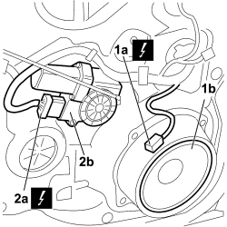
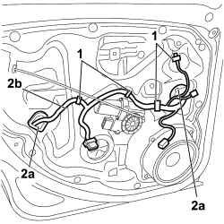

5505B20 REAR DOOR WIRING (ONE) LEFT OR RIGHT - R.R WITH WATER GUARD OR FRAME DETACHED
- Path
- Procedures > 55 ELECTRICAL EQUIPMENT > 5505 INSTRUMENT/GAUGE ELECTRICAL CIRCUITS > 5505B DOOR, BOOT AND BONNET WIRING > 5505B20 REAR DOOR WIRING (ONE) LEFT OR RIGHT - R.R WITH WATER GUARD OR FRAME DETACHED
- Kind
- repair procedure (removal / refitting; the operation number is the code)
- Applies to
- all engines; all production periods
- Interactive page
- https://sloeber94.github.io/elrnDB-fCrm/en/#/194000683
Applies to: all engines; all production periods
 Removing
Removing
 Refitting
Refitting- Turn the ignition key to the OFF position.
- Disconnect the negative battery terminal.
Description | Connector | |
|---|---|---|
BATTERY |
1. Disconnect the electrical connection (1a) for the speaker (1b).
Description | Connector | |
|---|---|---|
1a | SPEAKER IN LEFT REAR DOOR |
Description | Connector | |
|---|---|---|
1a | SPEAKER IN RIGHT REAR DOOR |
2. Disconnect the electrical connection (2a) for the window opening motor (2b).
Description | Connector | |
|---|---|---|
2a | LEFT REAR ELECTRIC WINDOW MOTOR |
Description | Connector | |
|---|---|---|
2a | RIGHT REAR ELECTRIC WINDOW MOTOR |

Applies to: all engines; all production periods
1. Release the buttons securing the wiring to the support frame using the special tool.
Tool | Description | Function | Validity |
|---|---|---|---|
1878077000 | Knife | Retainer removal |
2. Release the two cable duct boots (2a) and extract the wiring (2b) passing the connectors through the openings.

Applies to: all engines; all production periods
Refitting
Removing- Check that the wiring is not damaged.
- Place the wiring in position on the rear door taking passing the connectors carefully through the openings.
- Secure the buttons fastening the wiring to the support frame.
Fit the cable duct boots in the wiring passages.
- Connect the electrical connection for the electric window motor and secure it using the mountings.
Description | Connector | |
|---|---|---|
LEFT REAR ELECTRIC WINDOW MOTOR |
Description | Connector | |
|---|---|---|
RIGHT REAR ELECTRIC WINDOW MOTOR |
- Connect the electrical connection for the speaker.
Description | Connector | |
|---|---|---|
SPEAKER IN LEFT REAR DOOR |
Description | Connector | |
|---|---|---|
SPEAKER IN RIGHT REAR DOOR |
- Connect the negative battery terminal.
Description | Connector | |
|---|---|---|
BATTERY |
Topics linked from this page (5)
- A001 BATTERY
- N065 LEFT REAR ELECTRIC WINDOW MOTOR
- N066 RIGHT REAR ELECTRIC WINDOW MOTOR
- P040 SPEAKER IN LEFT REAR DOOR
- P041 SPEAKER IN RIGHT REAR DOOR